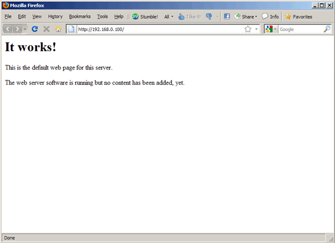
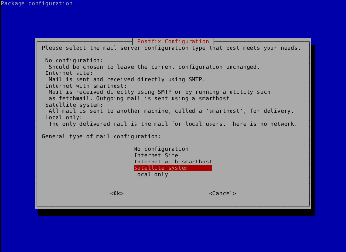
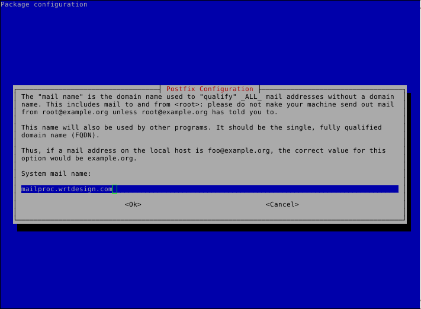
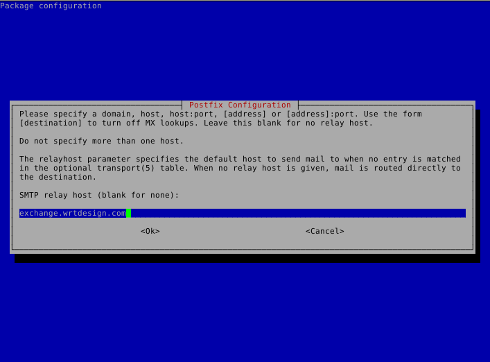
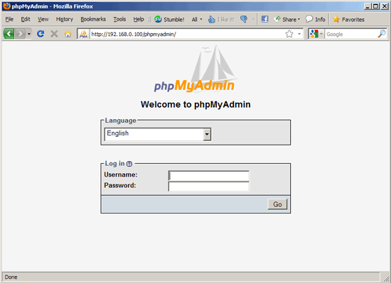

This milter has been tested on Debian Squeeze/Wheezy using a LAMP (Linux/Apache/MySQL/PHP)-based web server [1].
Installing a Debian Squeeze/Wheezy server is a fairly straight-forward procedure. The best method to use can be found via HowtoForge’s The Perfect Server - Debian Squeeze (Debian 6.0) [ISPConfig 2] and following it up through 8 Change The Default Shell on page 3.
Note
In WRT’s environment, virtual linux servers are set up using Linux Containers (lxc).
To create a new system, log in to the LXC server as root and use the `lxc-prepare script.
Make sure to edit /var/lib/lxc/<machine name>/rootfs/etc/network/interfaces and enter the appropriate static IP, routing and gateway information.
After logging in, make sure to install cifs-utils, telnet, rsyslog and logrotate.
aptitude install telnet rsyslog logrotate
Create a file called /etc/apt/sources.list.d/webmin.list. Add the following lines, then save:
deb http://download.webmin.com/download/repository sarge contrib
deb http://webmin.mirror.somersettechsolutions.co.uk/repository sarge contrib
Download and install the security key, then update and install webmin:
# cd /root
# wget http://www.webmin.com/jcameron-key.asc
# apt-key add jcameron-key.asc
# aptitude update
# aptitude install webmin
Test the installation by going to https://<serverIP>:10000. Log in using the system root password.
Note
Unless otherwise specified, all commands are run as the root user.
The web server needs to be set up in a LAMP configuration (Apache Web Server, MySQL, PHP)
Install MySQL
# aptitude install mysql-server mysql-client
Enter a password for the root MySQL user.
Install Apache2
# aptitude install apache2
Test to see that the web-server is running properly by visiting the IP address of this server in a web browser. You should see an image similar to this:
Install PHP5
PHP5 and the Apache PHP5 module are required to serve the EARS web-based code. Install them as follows:
# aptitude install php5 libapache2-mod-php5
Restart Apache:
# /etc/init.d/apache2 restart
Install MySQL support in PHP5
To get MySQL support in PHP, we can install the php5-mysql package. It’s a good idea to install some other PHP5 modules as well as you might need them for your applications. You can search for available PHP5 modules like this:
# apt-cache search php5
Pick the ones you need and install them like this:
# aptitude install php5-mysql php5-curl php-pear php5-imagick php5-mcrypt php5-memcache
Now restart Apache2:
# /etc/init.d/apache2 restart
Git [2] is required to download the EARS Milter code from the development repository.
Install Git
# aptitude install git
Configure git access
On the EARS Milter server, create a ssh key and copy it to the development repository server:
# cd ~/.ssh # ssh-keygen -t rsa # cd ~Hit return at the prompts to create the key without passphrase authentication.
# scp ~/.ssh/id_rsa.pub git
Log in to the repository server and authorize the key:
# ssh root@git # cd gitolite-admin # cp id_rsa.pub keydir/root\@<milterservername>.pub # emacs keydir/root\@<milterservername>.pubRemove the @<servername> from the second-to-last line of the file and saveWarning
DO NOT delete the last line - a blank line is necessary
# git commit -a # git push
On the EARS Milter server, test access to the repository server:
# cd /tmp # git clone gitolite@git:gitolite-adminIf this fails, please verify all the steps in this section
Install postfix with PCRE support:
# aptitude install postfix postfix-pcre
If prompted to remove packages relating to exim4 or sendmail, choose to Accept the solution.
When prompted for mail server configuration type, choose Satellite System:
Enter a fully-qualified domain name in the form of servername.wrtdesign.com, where servername is the name of the EARS Milter server. Make sure that there is a DNS entry for this server and its corresponding IP address on the DNS server.
Enter the FQDN of the MS Exchange server when prompted for a relay host:
Accept the defaults for Root and postmaster mail recipient, Other destinations to accept mail for and Force synchronous updates....
For Local networks, enter 10.102.0.0\16, 192.168.0.0\24, 127.0.0.1. This will handle all of WRT’s internal networks as well as the localhost.
Accept all the rest of the defaults.
Add the following lines to /etc/postfix/main.cf:
disable_vrfy_command = yes
smtpd_command_filter pcre:/etc/postfix/bogus_commands
smtpd_recipient_restrictions = permit_mynetworks reject_unauth_destination
Remove the following line from the same file:
#inet_interfaces = loopback-only
Edit the following line to read:
inet_protocols = ipv4
Open up /etc/postfix/master.cf and uncomment the line:
#submission inet n - - - - smtpd
Add the following lines (with indentation) to the same file:
scan unix - - n - 10 smtp
-o smtp_send_xforward_command=yes
-o disable_mime_output_conversion=yes
-o smtp_generic_maps=
Add the following (indented) after the line marked relay:
-o smtp_fallback_relay=
Create a file called /etc/postfix/bogus_commands and enter the following two lines:
/^[^ ]{3}\s.*/ NOOP
/^https{0,1}\:\/\/.*/ NOOP
Reload the configuration and send a test message:
# postfix reload
# telnet localhost 25
telnet localhost 25
Trying 127.0.0.1...
Connected to localhost.
Escape character is '^]'.
220 ph-wks-lin01.wrtdesign.com ESMTP Postfix (Debian/GNU)
ehlo localhost
250-ph-wks-lin01.wrtdesign.com
250-PIPELINING
250-SIZE 10240000
250-ETRN
250-STARTTLS
250-ENHANCEDSTATUSCODES
250-8BITMIME
250 DSN
mail from: root
250 2.1.0 Ok
rcpt to: ph_test@wrtdesign.com
250 2.1.5 Ok
data
354 End data with <CR><LF>.<CR><LF>
test
.
250 2.0.0 Ok: queued as 4F00049F2A
The default version of Python in Debian Squeeze/Wheezy is 2.7. This is what we will be installing.
% aptitude install python
phpMyAdmin is a web interface through which you can manage your MySQL databases. It’s a good idea to install it:
aptitude install phpmyadmin
You will see the following question:
Web server to reconfigure automatically: <– apache2Configure database for phpmyadmin with dbconfig-common? <– No
Afterwards, you can access phpMyAdmin under http://<serverIP>/phpmyadmin/:
milter_protocol = 6 smtpd_milters = unix:/var/spool/EARS/EARSmilter.sock milter_default_action = acceptNote
If/when you add additional milters to this sytem, make sure that EARS is the last one listed, as milters are processed in order.
| [1] | Adapted from HowtoForge’s Installing Apache2 With PHP5 And MySQL Support On Debian Squeeze (LAMP) |
| [2] | Pro Git by Scott Chacon is available to read online for free. |